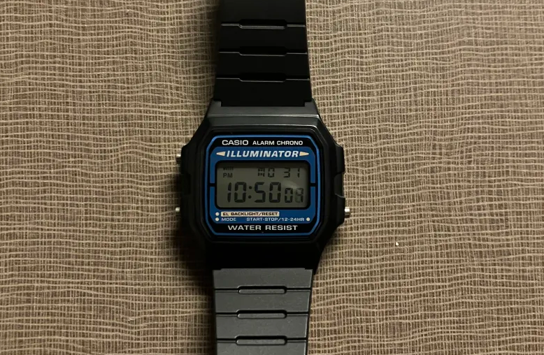

This page will be updated occasionally with whatever I’m currently using.
Desktop OS: Linux Mint Cinnamon
It was my first Linux distro when I made the switch in high school and it’s stuck with me ever since. Highly recommend it to anyone switching from Windows. It’s reliable for the most part and quite easy to set up and get going. I installed it on a (for lack of a better term) normie friend’s old laptop, and she used it perfectly fine for school with no oversight or assistance.
Laptop: Framework 13
I got this laptop for exactly the reasons everyone else got it. The price-to-performance is honestly a little shit, but it was my graduation present, and the prospect of being able to repair every aspect of my own laptop was too good to pass up as a soon-to-be broke college student. It has served me quite well.
Text Editors: vim/vscodium
Vim is rly nice. I actually don't use it for coding, it's essentially just a vimwiki machine for my note taking. It works very well for that purpose.
VSCodium is my go-to for code editing when I'm not using a Jetbrains IDE (like when making this website!). It's a quite solid package for what it is. I use the telemetry-free fork cause fuck microsoft.
Smash Bros
Brawl/Melee
For Brawl (my main game) and Melee, I use an indigo OEM that’s older than me. It’s far from perfect, but I’m so used to it that it feels more like an extension of Livy than a controller (plus it’s got sentimental value :3).
Specs:
- Indigo shell
- Replaced left stick potentiometer
- Snapback module
- Long plug in right trigger
- Disconnected motor
- Third party left stick
Ultimate
Yay I finally have my new ult controller! :D
If you’re wondering why I don’t just use my Brawl controller, it’s cause the plug in the trigger doesn’t register digital presses properly in Ultimate.
Specs:
- Sunburnt JP White shell
- Replaced left stickbox
- Snapback module
- Shortened springs
- Disconnected motor
Audio
In-Ear: AirPods Pro 2
Very very solid earbuds (as you’d expect from the price). The sound quality is great, as you’d expect, but the best part by far is the noise canceling and transparency modes. My autistic ass cannot handle loud environments very well, so putting these on in transparency mode has come in clutch many a time.
Over-Ear: Soundcore Q20i
The opposite of the AirPods in that they punch way above their weight class. They sound pretty shit out of the box (mostly because of the bass boost mode that’s on by default and requires their app to disable), but once they’re set up and EQ’d, they sound very solid, are very comfortable, and have insane battery life.
Misc.
Backpack: Pelican MBP20
I got this backpack on a crazy sale before starting uni, like almost 50% off. I think it was on such crazy sale cause they were discontinuing it, which is a shame, because this backpack is a beast. Super durable, super water-resistant, and just big enough for my use case. The giant front pocket with the vertical zipper confused me at first, but I’ve come to love it.
Watch: Casio F-105
This thing rocks. It's my alarm in the morning. It's my timer so I know when to rinse my hair after conditioning. It's even a watch. Hell yeah.
